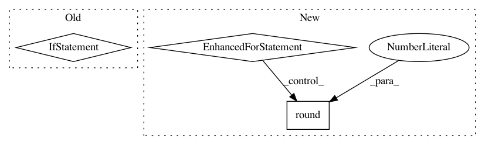

a092a5612c48a8a61c7d3deadf3749338ea4b64d,tests/test_regression.py,,check_linear_models,#,160
Before Change
// catastrophic happened. Note though that we cannot
// test feature weights if we are using feature hashing
// since model_params is not defined with a featurehasher.
if not use_feature_hashing:
// get the weights for this trained model
learned_weights = learner.model_params[0]
for feature_name in learned_weights:
learned_w = math.ceil(learned_weights[feature_name])
given_w = math.ceil(weightdict[feature_name])
eq_(learned_w, given_w)
// now generate the predictions on the test FeatureSet
predictions = learner.predict(test_fs)
// now make sure that the predictions are close to
// the actual test FeatureSet labels that we generated
After Change
// get the weights for this trained model
learned_weights = learner.model_params[0]
for feature_name in learned_weights:
learned_w_ceil = math.ceil(learned_weights[feature_name])
given_w_ceil = math.ceil(weightdict[feature_name])
learned_w_round = round(learned_weights[feature_name], 0)
given_w_round = round(weightdict[feature_name], 0)
ceil_equal = learned_w_ceil == given_w_ceil
round_equal = learned_w_round == given_w_round
either_equal = ceil_equal or round_equal
assert either_equal
// now generate the predictions on the test FeatureSet
predictions = learner.predict(test_fs)
// now make sure that the predictions are close to
// the actual test FeatureSet labels that we generated
In pattern: SUPERPATTERN
Frequency: 3
Non-data size: 3
Instances
Project Name: EducationalTestingService/skll
Commit Name: a092a5612c48a8a61c7d3deadf3749338ea4b64d
Time: 2019-02-20
Author: nmadnani@ets.org
File Name: tests/test_regression.py
Class Name:
Method Name: check_linear_models
Project Name: open-mmlab/mmdetection
Commit Name: 3a0e75b08141bf635e59de571dec190313d3ca60
Time: 2021-01-12
Author: yhcao6@gmail.com
File Name: mmdet/datasets/custom.py
Class Name: CustomDataset
Method Name: evaluate
Project Name: open-mmlab/mmdetection
Commit Name: 3a0e75b08141bf635e59de571dec190313d3ca60
Time: 2021-01-12
Author: yhcao6@gmail.com
File Name: mmdet/datasets/voc.py
Class Name: VOCDataset
Method Name: evaluate